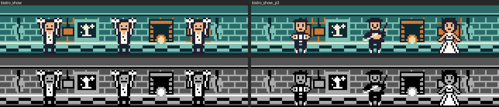
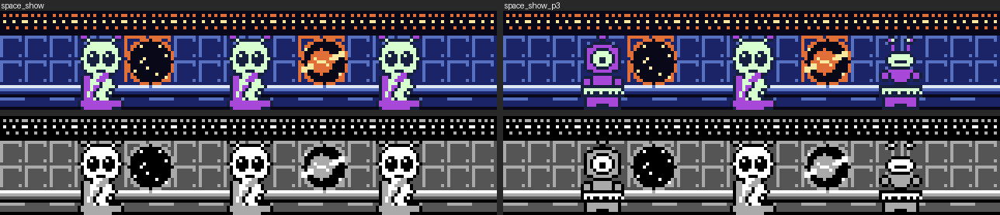
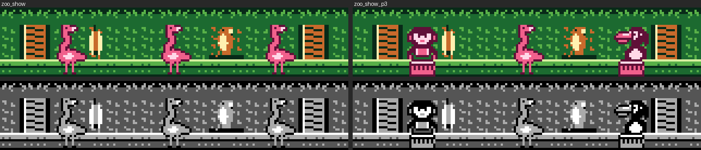
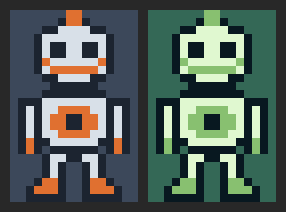
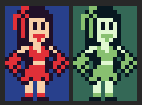

Open questions
Every question waiting on your answer, with its pictures. Answered questions come off this list. Reply in chat with the number, e.g. "Q12: shared".
3 open · updated 2026-11-02
Q5
Show redraws
Per venue: yes · another pass
- Left current, right new; Color over DMG
- Same palettes, same tiles
Bistro
Fiddler locked; swishing dress; accordion sag

Space
Old alien plus two of his kind

Zoo
Flamingo, monkey, toucan

Zoo peacocks
First pass; second pass coming

Q6
Factory robot fix
Robot last frame: a · b · another pass
- a robot pose, elbows bent
- b side step, arm pumping
- Top row a, bottom row b; Color left, DMG right
- Spin into the headstand: pass coming

Q9
Cheerleader from your pose
Stadium p10: yes · another pass
- Frame 0 is your pose; frames 1 and 2 your kick and crouch
- Kick, hop, kick
